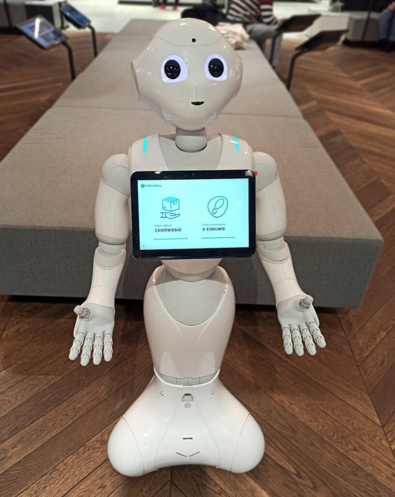

Projekt robotów sprzątających
Naszym długo opracowywanym projektem są roboty sprzątające. Będą one zbierały śmieci z ulic, chodników, lasów, parków itd.
Każdy robot ma swoje osobne oprogramowanie. Mianowicie mają one wbudowaną nawigacje dzięki której wiedzą na jakim terenie mają zbierać śmieci
Roboty będą również miały funkcję segregacji. Film poniżej pokazuje jak poprawnie segregować odpady :)